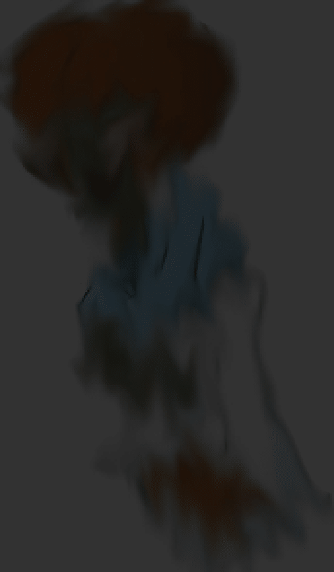

They say if you’re out late in the woods around 6:07 PM and you hear ticking stop all at once… run.Because that’s when he comes.They call him the 6 7 Man a tall figure with green skin, an afro that glows faintly orange in the moonlight, and gold chains and rings that jingle softly, like wind chimes made of bones. He isn’t after people not right away at least. He’s after time itself.
Everywhere he goes, clocks die.School clocks, wristwatches, even the blinking digits on microwaves. He doesn’t smash them for fun he erases them, until every clock in the room freezes on 6:07. That’s his mark. His moment.No one knows why.
Some folks say he died at 6:07 one night electrocuted while stealing a diamond watch. Others whisper he made a deal with something dark, trading his soul to live forever… so long as no clock could ever tick past the moment he made the deal.But time doesn’t like to be stolen.So now he’s cursed to destroy it.
One night, the police thought they’d caught him.They tracked the green man to an abandoned subway station, filled with shattered clocks. The captain said, “Freeze, freak!” and that’s when the laughing started. Low, scratchy, like broken vinyl on a record player.He snapped his fingers, and from the shadows came flying jack-o’-lanterns dozens of them, carved with wicked grins, orange light pouring from their eyes. They screamed as they flew, spinning and swooping through the air. The pumpkins crashed into police cars, wrapped their vines around the wheels, and lifted the vehicles off the ground like toys.The officers were never seen again.Some people say those same patrol cars can be found deep in the woods, engines still idling, clocks on their dashboards forever stuck at 6:07.So if you’re out camping and your phone glitches to 6:07 even for a second and all goes quiet… don’t look at your watch. Don’t check the time.Because if you do, you might just see his reflection staring back at you a grin full of gold, eyes glowing like clock faces, and the faint whisper of chains
“Six… or… seven…”
And when you blink all the clocks around you will stop.